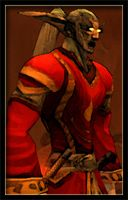

Oneeyed
Age : inconnu
Sexe : Homme
Race : Elfe
Faction : Alliance
Formation : Voleur
Description : Quand je suis rentré dans ma guilde, il y déjà un petit moment, le grand chef de l'époque Le grand nain Thoarr, me demandais de me présenter à la guilde, ce que je fesais, qui j'étais, l'histoire de ma vie. Ce n'était pas un excerci facile à l'époque pour moi car mon passé est assez tulmutieux. Mais voulant montrer à ma guilde que j'étais heureux de les rejoindre avec ma femme Nerindra, un soir j'ai pris le grimoire de la guilde est j'y est apposé mon histoire, du moins ce dont je me souvenais. Je vous transmet icic une copie de mes ecrits, peut être apprendrai vous à mieux me connaitre.
Plus d'infos sur Oneeyed >>>Lire les 6 récits de Oneeyed >>>